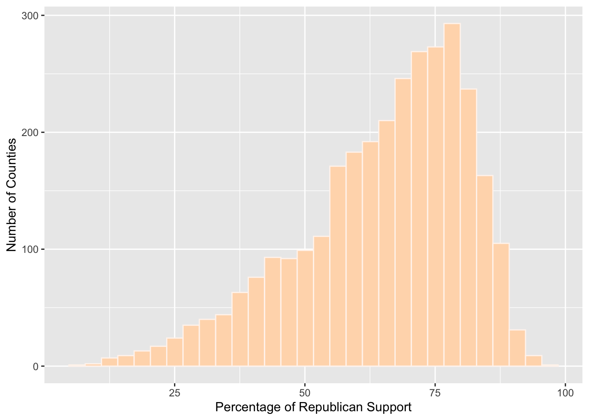
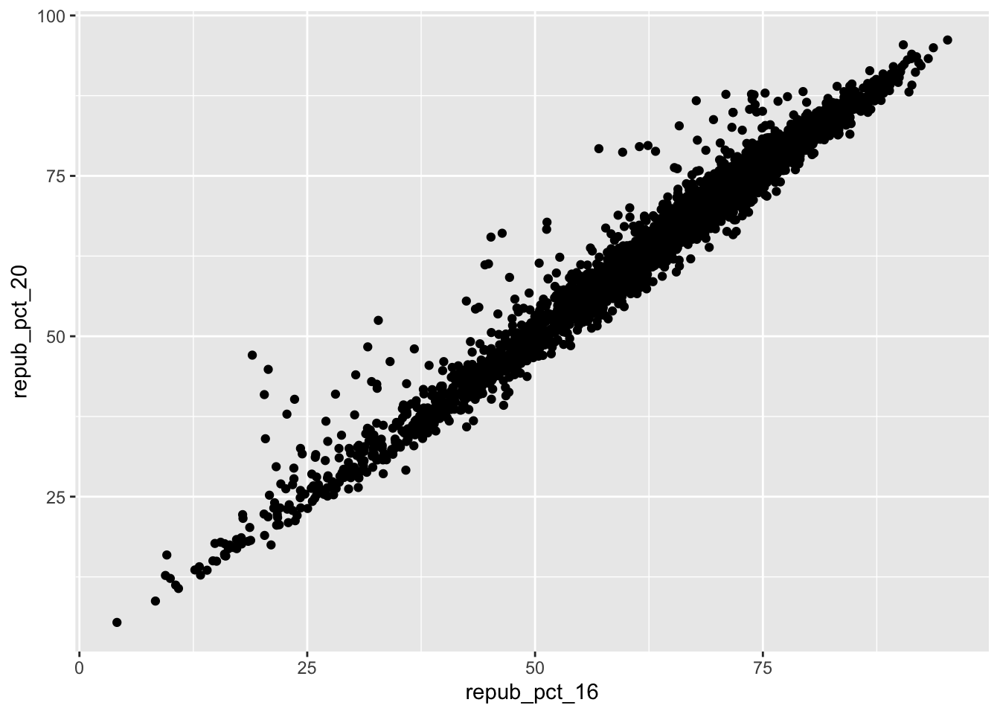
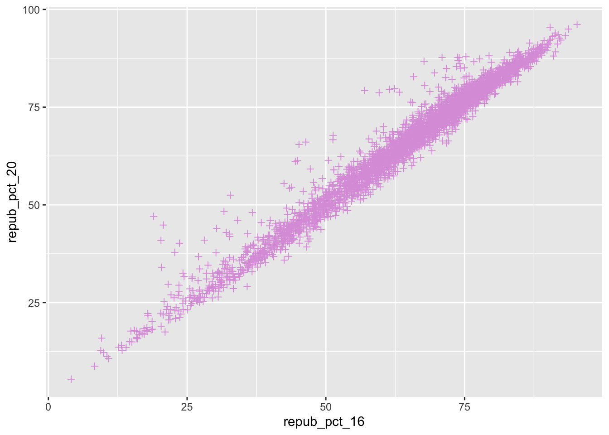
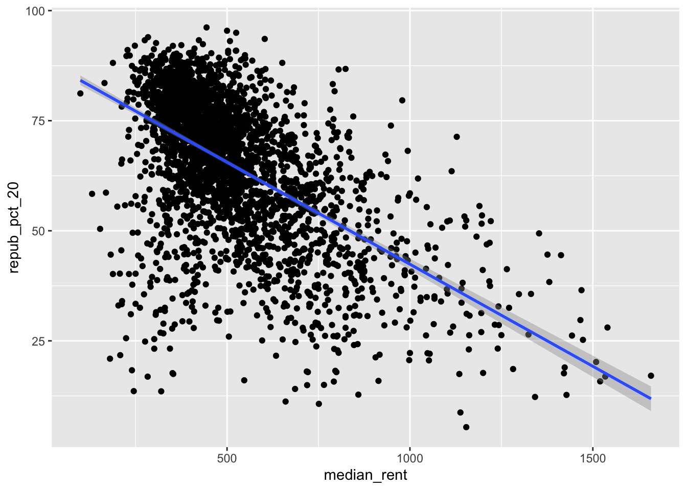
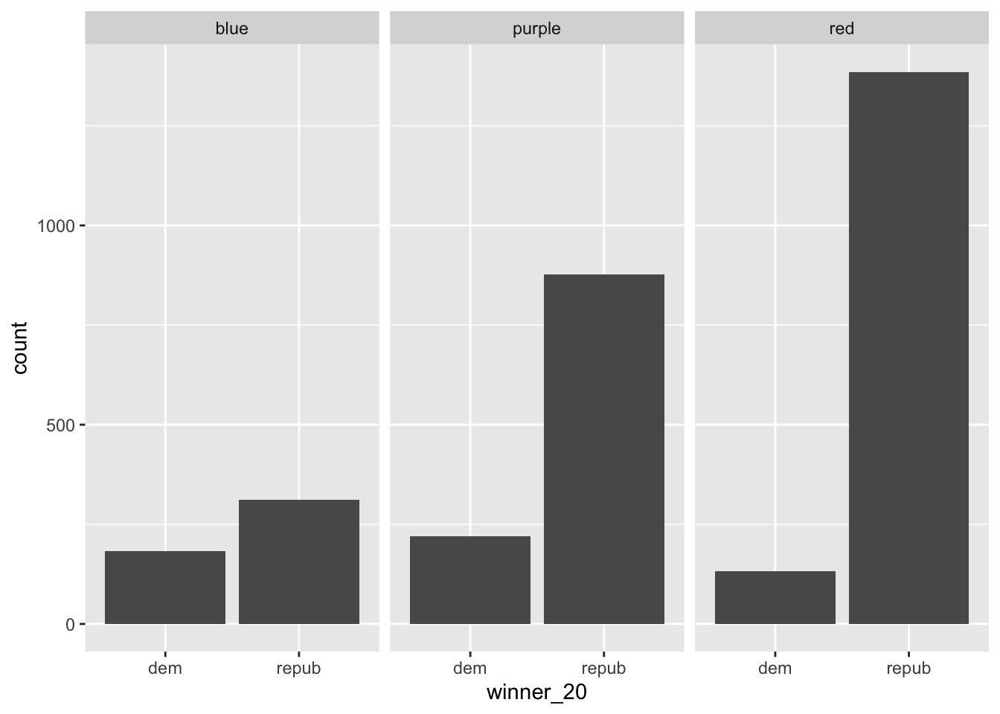
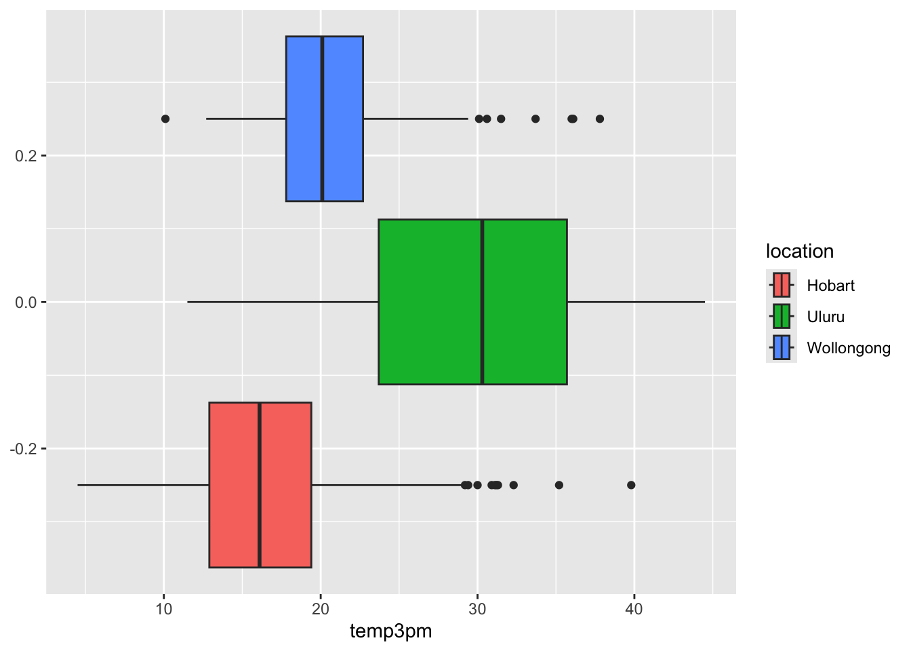

library(tidyverse)# Load dataelections <-read.csv("https://mac-stat.github.io/data/election_2020_county.csv")# Check it outhead(elections)
state_name state_abbr historical county_name county_fips total_votes_20
1 Alabama AL red Autauga County 1001 27770
2 Alabama AL red Baldwin County 1003 109679
3 Alabama AL red Barbour County 1005 10518
4 Alabama AL red Bibb County 1007 9595
5 Alabama AL red Blount County 1009 27588
6 Alabama AL red Bullock County 1011 4613
repub_pct_20 dem_pct_20 winner_20 total_votes_16 repub_pct_16 dem_pct_16
1 71.44 27.02 repub 24661 73.44 23.96
2 76.17 22.41 repub 94090 77.35 19.57
3 53.45 45.79 repub 10390 52.27 46.66
4 78.43 20.70 repub 8748 76.97 21.42
5 89.57 9.57 repub 25384 89.85 8.47
6 24.84 74.70 dem 4701 24.23 75.09
winner_16 total_votes_12 repub_pct_12 dem_pct_12 winner_12 total_population
1 repub 23909 72.63 26.58 repub 54907
2 repub 84988 77.39 21.57 repub 187114
3 repub 11459 48.34 51.25 dem 27321
4 repub 8391 73.07 26.22 repub 22754
5 repub 23980 86.49 12.35 repub 57623
6 dem 5318 23.51 76.31 dem 10746
percent_white percent_black percent_asian percent_hispanic per_capita_income
1 76 18 1 2 24571
2 83 9 1 4 26766
3 46 46 0 5 16829
4 75 22 0 2 17427
5 88 1 0 8 20730
6 22 71 0 6 18628
median_rent median_age
1 668 37.5
2 693 41.5
3 382 38.3
4 351 39.4
5 403 39.6
6 276 39.6
Exercise 0: Review
Part a How many, or roughly what percent, of the 3000+ counties did the Republican candidate win in 2020? - My guess: 72 %
Then make a plot of the winner variable.
Code
ggplot(elections, aes(x = winner_20)) +geom_bar(color ="white", fill ="salmon") +labs(x ="2020 Winner", y ="Number of Counties")
Follow-up Questions: - Overall winner? - Still need the percentage. - Number of counties per state?
Part b
Code
ggplot(elections, aes(x = repub_pct_20)) +geom_histogram(color ="seashell", fill ="peachpuff") +labs(x ="Percentage of Republican Support", y ="Number of Counties")

What is the overall percentage of Republican voters?
What does the percentage of Democratic support look like?
How many counties are within each state? What is their weight to the overall vote?
Exercise 1: Quantitative vs Quantitative Intuition Check
Code
ggplot(elections, aes(x = repub_pct_16, y = repub_pct_20)) +geom_point()
Exercise 2: 2 Quantitative Variables
Code
# Set up the plotting frame# How does this differ than the frame for our histogram of repub_pct_20 alone? It is a bivariate visualization instead of a univariate, as it is reflecting the relationship between two variables rather than one. ggplot(elections, aes(y = repub_pct_20, x = repub_pct_16))
Code
# Add a layer of points for each county# Take note of the geom! -> geom_point()ggplot(elections, aes(y = repub_pct_20, x = repub_pct_16)) +geom_point()

Code
# Change the shape of the points# What happens if you change the shape to another number? -> It makes the shape of each point different. In this case, they look like pluses rather than dots. ggplot(elections, aes(y = repub_pct_20, x = repub_pct_16)) +geom_point(shape =3)
Code
# YOU TRY: Modify the code to make the points "orange"# NOTE: Try to anticipate if "color" or "fill" will be useful here. Then try both.ggplot(elections, aes(y = repub_pct_20, x = repub_pct_16)) +geom_point(color ="plum", fill ="palegreen", shape =3)

Code
#"Color" is more useful.
Code
# Add a layer that represents each county by the state it's in# Take note of the geom and the info it needs to run!ggplot(elections, aes(y = repub_pct_20, x = repub_pct_16)) +geom_text(aes(label = state_abbr))
Code
#"geom_text" and "label = variable".
Exercise 3: Reflect
Republican support in 2016 has a strong positive relationship with republican support in 2020. There are no noticeable outliers, as all the points reflect a near linear line.
Exercise 4: Visualizing trend
Code
ggplot(elections, aes(y = repub_pct_20, x = repub_pct_16)) +geom_point() +geom_smooth()
Code
#Adds a fitted line.
Part a
Code
#Contains the model smooth without the individual point glyphs. ggplot(elections, aes(y = repub_pct_20, x = repub_pct_16)) +geom_smooth()
Part b
Code
#Adds a linear line of best fit. ggplot(elections, aes(y = repub_pct_20, x = repub_pct_16)) +geom_point() +geom_smooth(method ="lm")
Exercise 5: Your Turn
Code
# Scatterplot of repub_pct_20 vs median_rentggplot(elections, aes(y = repub_pct_20, x = median_rent)) +geom_point() +geom_smooth(method ="lm")

Code
# Scatterplot of repub_pct_20 vs median_ageggplot(elections, aes(y = repub_pct_20, x = median_age)) +geom_point() +geom_smooth(method ="lm")
The relationship between median_rent and repub_pct_20 is a moderate to weak negative correlation.
The relationship between median_age and repub_pct_20 is a weak positive correlation.
It is hard to tell without a clear linear regression analysis which variable is a better predictor of repub_pct_20, but from my eyes I would predict that median_rent is a slighter better predictor as it seems to follow a more clear pattern than median_age.
Exercise 6: A Sad Scatterplot
Code
ggplot(elections, aes(y = repub_pct_20, x = historical)) +geom_point()
Since “historical” is categorical, it tells us a count of observations in each category, which does not work well against a quantitative variable as its scatterplot reveals no information about their relationship with each other. We don’t know the relationship between the Republican voting trends of 2020 and historical voting trends.
Exercise 7: Quantitative vs Categorical - Violins & Boxes
#Box plots are constructed from five numbers - the minimum, 25th percentile, median, 75th percentile, and maximum value of a quantitative variable.
Reflect Historically, counties with a higher republican voting percentage in the 2020 election voted red. Then, they were second most likely to have historically voted purple, and least likely to have voted blue.
Exercise 8: Quantitative vs Categorical - Intuition Check
Exercise 9: Quantitative vs Categorical - Density Plots
Code
# Name two "bad" things about this plot: 1) There are no labels; 2) The colors don't match the parties. ggplot(elections, aes(x = repub_pct_20, fill = historical)) +geom_density()
Code
# What does scale_fill_manual do? -> It changes the color of each category. ggplot(elections, aes(x = repub_pct_20, fill = historical)) +geom_density() +scale_fill_manual(values =c("blue", "purple", "red"))
Code
# What does alpha = 0.5 do? -> It adjusts the transparency# Play around with different values of alpha, between 0 and 1ggplot(elections, aes(x = repub_pct_20, fill = historical)) +geom_density(alpha =0.5) +scale_fill_manual(values =c("blue", "purple", "red"))
Code
# What does facet_wrap do?! -> facet_wrap breaks the graph into its different categories for easy individual viewing of each category. ggplot(elections, aes(x = repub_pct_20, fill = historical)) +geom_density() +scale_fill_manual(values =c("blue", "purple", "red")) +facet_wrap(~ historical)
Code
# Let's try a similar grouping strategy with a histogram instead of density plot.# Why is this terrible? -> Since histograms prioritize the count over the ratio of each category, the visualization becomes incredibly misleading, as blue is now the seemingly most popular party historically. ggplot(elections, aes(x = repub_pct_20, fill = historical)) +geom_histogram(color ="white") +scale_fill_manual(values =c("blue", "purple", "red"))
Exercise 10
I like density plots the most because it seems to be most efficient for immediate pattern-recognition. The others take a bit more effort in order to understand the distribution of each the categories, although I like boxplots as well.
Density plots tell us more details about the distribution of the data because it is easy to see the shape and modes.
One con, however, is that density plots can be harder to compare details about the relationships between variables, while boxplots are a great device for visually comparing percentiles, medians, etc.
Exercise 11: Categorical vs Categorical - Intuition Check
Code
# Plot 1: adjust this to recreate the top plotggplot(elections, aes(x = historical, fill = winner_20)) +geom_bar()
Code
# Plot 2: adjust this to recreate the bottom plotggplot(elections, aes(x = winner_20)) +geom_bar() +facet_wrap(~ historical)

Exercise 12: Categorical vs Categorical
Code
# A stacked bar plot# How are the "historical" and "winner_20" variables mapped to the plot, i.e. what roles do they play?ggplot(elections, aes(x = historical, fill = winner_20)) +geom_bar()
Code
#We are measuring the count of each county historically, moderated by the how many counties each party one in 2020.
Code
# A faceted bar plotggplot(elections, aes(x = winner_20)) +geom_bar() +facet_wrap(~ historical)
Code
# A side-by-side bar plot# Note the new argument to geom_barggplot(elections, aes(x = historical, fill = winner_20)) +geom_bar(position ="dodge")
Code
# A proportional bar plot# Note the new argument to geom_barggplot(elections, aes(x = historical, fill = winner_20)) +geom_bar(position ="fill")
Part a - It is not helpful for understanding the total number of counts for each category, but - It is helpful for understanding the percentage each variable received.
Part b - I think it depends on the question. I think the side-by-side bar plot is the most applicable to the majority of scenarios, but if I needed to understand percentages the proportional bar plot would be more handy.
How do 3pm temperatures (temp3pm) differ by location?
Code
ggplot(weather, aes(x = temp3pm, fill = location)) +geom_boxplot()

Uluru seems to have the most varying temperatures, but overall the highest at a median temperature of 30 degrees. Hobart and Wollongong are close, as the lowest 25th percentile of temperatures in Wollongong overlaps with the highest 25th percentile of Hobart, but overall Hobart has a colder median temperature of about 15 degrees while Wollongong is closer to 20.
# How might we predict the 3pm temperature (temp3pm) by the 9am temperature (temp9am)?
Code
ggplot(weather, aes(x = temp9am, y = temp3pm)) +geom_point() +geom_smooth(method ="lm")
Overall, the temperature at 3 pm seems to be consistently 5 degrees higher than it was at 9 am.
# How do the number of rainy days (raintoday) differ by location?
Code
ggplot(weather, aes(fill = raintoday, x = location)) +geom_bar()
None of the locations seem particularly rainy, but Uluru is certainly the least rainy and Wollongong seems to be the relatively most rainy.
4.4 Exercises (opt)
Source Code
---title: "Bivariate Viz"---```{r}library(tidyverse)# Load dataelections <-read.csv("https://mac-stat.github.io/data/election_2020_county.csv")# Check it outhead(elections)```# Exercise 0: Review **Part a** How many, or roughly what percent, of the 3000+ counties did the Republican candidate win in 2020?- My guess: 72 % Then make a plot of the winner variable.```{r}ggplot(elections, aes(x = winner_20)) +geom_bar(color ="white", fill ="salmon") +labs(x ="2020 Winner", y ="Number of Counties")```Follow-up Questions: - Overall winner? - Still need the percentage. - Number of counties per state? **Part b** ```{r}ggplot(elections, aes(x = repub_pct_20)) +geom_histogram(color ="seashell", fill ="peachpuff") +labs(x ="Percentage of Republican Support", y ="Number of Counties")```- What is the overall percentage of Republican voters? - What does the percentage of Democratic support look like? - How many counties are within each state? What is their weight to the overall vote? # Exercise 1: Quantitative vs Quantitative Intuition Check ```{r}ggplot(elections, aes(x = repub_pct_16, y = repub_pct_20)) +geom_point()```# Exercise 2: 2 Quantitative Variables ```{r}# Set up the plotting frame# How does this differ than the frame for our histogram of repub_pct_20 alone? It is a bivariate visualization instead of a univariate, as it is reflecting the relationship between two variables rather than one. ggplot(elections, aes(y = repub_pct_20, x = repub_pct_16))``````{r}# Add a layer of points for each county# Take note of the geom! -> geom_point()ggplot(elections, aes(y = repub_pct_20, x = repub_pct_16)) +geom_point()``````{r}# Change the shape of the points# What happens if you change the shape to another number? -> It makes the shape of each point different. In this case, they look like pluses rather than dots. ggplot(elections, aes(y = repub_pct_20, x = repub_pct_16)) +geom_point(shape =3)``````{r}# YOU TRY: Modify the code to make the points "orange"# NOTE: Try to anticipate if "color" or "fill" will be useful here. Then try both.ggplot(elections, aes(y = repub_pct_20, x = repub_pct_16)) +geom_point(color ="plum", fill ="palegreen", shape =3)#"Color" is more useful. ``````{r}# Add a layer that represents each county by the state it's in# Take note of the geom and the info it needs to run!ggplot(elections, aes(y = repub_pct_20, x = repub_pct_16)) +geom_text(aes(label = state_abbr))#"geom_text" and "label = variable". ```# Exercise 3: Reflect - Republican support in 2016 has a strong positive relationship with republican support in 2020. There are no noticeable outliers, as all the points reflect a near linear line. # Exercise 4: Visualizing trend ```{r}ggplot(elections, aes(y = repub_pct_20, x = repub_pct_16)) +geom_point() +geom_smooth()#Adds a fitted line. ```**Part a** ```{r}#Contains the model smooth without the individual point glyphs. ggplot(elections, aes(y = repub_pct_20, x = repub_pct_16)) +geom_smooth()```**Part b** ```{r}#Adds a linear line of best fit. ggplot(elections, aes(y = repub_pct_20, x = repub_pct_16)) +geom_point() +geom_smooth(method ="lm")```# Exercise 5: Your Turn ```{r}# Scatterplot of repub_pct_20 vs median_rentggplot(elections, aes(y = repub_pct_20, x = median_rent)) +geom_point() +geom_smooth(method ="lm")# Scatterplot of repub_pct_20 vs median_ageggplot(elections, aes(y = repub_pct_20, x = median_age)) +geom_point() +geom_smooth(method ="lm")```- The relationship between median_rent and repub_pct_20 is a moderate to weak negative correlation. - The relationship between median_age and repub_pct_20 is a weak positive correlation. - It is hard to tell without a clear linear regression analysis which variable is a better predictor of repub_pct_20, but from my eyes I would predict that median_rent is a slighter better predictor as it seems to follow a more clear pattern than median_age. # Exercise 6: A Sad Scatterplot ```{r}ggplot(elections, aes(y = repub_pct_20, x = historical)) +geom_point()```Since "historical" is categorical, it tells us a count of observations in each category, which does not work well against a quantitative variable as its scatterplot reveals no information about their relationship with each other. We don't know the relationship between the Republican voting trends of 2020 and historical voting trends. # Exercise 7: Quantitative vs Categorical - Violins & Boxes ```{r}# Side-by-side violin plotsggplot(elections, aes(y = repub_pct_20, x = historical)) +geom_violin()``````{r}# Side-by-side boxplots (defined below)ggplot(elections, aes(y = repub_pct_20, x = historical)) +geom_boxplot()#Box plots are constructed from five numbers - the minimum, 25th percentile, median, 75th percentile, and maximum value of a quantitative variable. ```**Reflect** Historically, counties with a higher republican voting percentage in the 2020 election voted red. Then, they were second most likely to have historically voted purple, and least likely to have voted blue. # Exercise 8: Quantitative vs Categorical - Intuition Check ```{r}ggplot(elections, aes(x = repub_pct_20)) +geom_density(fill ="blue")```# Exercise 9: Quantitative vs Categorical - Density Plots ```{r}# Name two "bad" things about this plot: 1) There are no labels; 2) The colors don't match the parties. ggplot(elections, aes(x = repub_pct_20, fill = historical)) +geom_density()``````{r}# What does scale_fill_manual do? -> It changes the color of each category. ggplot(elections, aes(x = repub_pct_20, fill = historical)) +geom_density() +scale_fill_manual(values =c("blue", "purple", "red"))``````{r}# What does alpha = 0.5 do? -> It adjusts the transparency# Play around with different values of alpha, between 0 and 1ggplot(elections, aes(x = repub_pct_20, fill = historical)) +geom_density(alpha =0.5) +scale_fill_manual(values =c("blue", "purple", "red"))``````{r}# What does facet_wrap do?! -> facet_wrap breaks the graph into its different categories for easy individual viewing of each category. ggplot(elections, aes(x = repub_pct_20, fill = historical)) +geom_density() +scale_fill_manual(values =c("blue", "purple", "red")) +facet_wrap(~ historical)``````{r}# Let's try a similar grouping strategy with a histogram instead of density plot.# Why is this terrible? -> Since histograms prioritize the count over the ratio of each category, the visualization becomes incredibly misleading, as blue is now the seemingly most popular party historically. ggplot(elections, aes(x = repub_pct_20, fill = historical)) +geom_histogram(color ="white") +scale_fill_manual(values =c("blue", "purple", "red"))```# Exercise 10 - I like density plots the most because it seems to be most efficient for immediate pattern-recognition. The others take a bit more effort in order to understand the distribution of each the categories, although I like boxplots as well. - Density plots tell us more details about the distribution of the data because it is easy to see the shape and modes. - One con, however, is that density plots can be harder to compare details about the relationships between variables, while boxplots are a great device for visually comparing percentiles, medians, etc. # Exercise 11: Categorical vs Categorical - Intuition Check ```{r}# Plot 1: adjust this to recreate the top plotggplot(elections, aes(x = historical, fill = winner_20)) +geom_bar()``````{r}# Plot 2: adjust this to recreate the bottom plotggplot(elections, aes(x = winner_20)) +geom_bar() +facet_wrap(~ historical)```# Exercise 12: Categorical vs Categorical ```{r}# A stacked bar plot# How are the "historical" and "winner_20" variables mapped to the plot, i.e. what roles do they play?ggplot(elections, aes(x = historical, fill = winner_20)) +geom_bar()#We are measuring the count of each county historically, moderated by the how many counties each party one in 2020. ``````{r}# A faceted bar plotggplot(elections, aes(x = winner_20)) +geom_bar() +facet_wrap(~ historical)``````{r}# A side-by-side bar plot# Note the new argument to geom_barggplot(elections, aes(x = historical, fill = winner_20)) +geom_bar(position ="dodge")``````{r}# A proportional bar plot# Note the new argument to geom_barggplot(elections, aes(x = historical, fill = winner_20)) +geom_bar(position ="fill")```Part a - It is not helpful for understanding the total number of counts for each category, but- It is helpful for understanding the percentage each variable received. Part b - I think it depends on the question. I think the side-by-side bar plot is the most applicable to the majority of scenarios, but if I needed to understand percentages the proportional bar plot would be more handy. # Exercise 13: Practice ```{r}weather <-read.csv("https://mac-stat.github.io/data/weather_3_locations.csv")```**How do 3pm temperatures (temp3pm) differ by location?** ```{r}ggplot(weather, aes(x = temp3pm, fill = location)) +geom_boxplot()```Uluru seems to have the most varying temperatures, but overall the highest at a median temperature of 30 degrees. Hobart and Wollongong are close, as the lowest 25th percentile of temperatures in Wollongong overlaps with the highest 25th percentile of Hobart, but overall Hobart has a colder median temperature of about 15 degrees while Wollongong is closer to 20. **# How might we predict the 3pm temperature (temp3pm) by the 9am temperature (temp9am)?** ```{r}ggplot(weather, aes(x = temp9am, y = temp3pm)) +geom_point() +geom_smooth(method ="lm")```Overall, the temperature at 3 pm seems to be consistently 5 degrees higher than it was at 9 am. **# How do the number of rainy days (raintoday) differ by location?**```{r}ggplot(weather, aes(fill = raintoday, x = location)) +geom_bar()```None of the locations seem particularly rainy, but Uluru is certainly the least rainy and Wollongong seems to be the relatively most rainy. # 4.4 Exercises (opt)